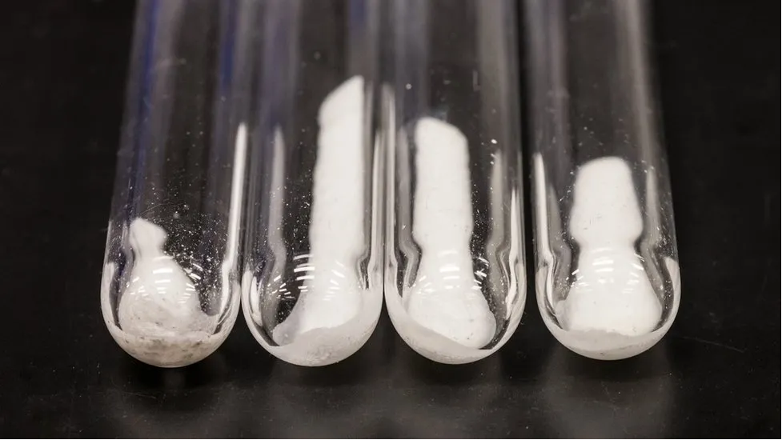

21 hours ago
Samples of the new solid electrolyte discovered by Microsoft AI and HPC tools
By
A brand new substance, which could reduce lithium use in batteries, has been discovered using artificial intelligence (AI) and supercomputing.
The findings were made by Microsoft and the Pacific Northwest National Laboratory (PNNL), which is part of the US Department of Energy.
Scientists say the material could potentially reduce lithium use by up to 70%.
Since its discovery the new material has been used to power a lightbulb.
Microsoft researchers used AI and supercomputers to narrow down 32 million potential inorganic materials to 18 promising candidates in less than a week - a screening process that could have taken more than two decades to carry out using traditional lab research methods.
The process from inception to the development of a working battery prototype took less than nine months.
The two organisations achieved this by using advanced AI and high-performance computing which combines large numbers of computers to solve complex scientific and mathematical tasks.
Executive vice president of Microsoft, Jason Zander, told the BBC one of the tech giant's missions was to "compress 250 years of scientific discovery into the next 25".
"And we think technology like this will help us do that. This is the way that this type of science I think is going to get done in the future," he said.
Lithium is often referred to as "white gold" because of its market value and silvery color. It is one of the key components in rechargeable batteries (lithium-ion batteries) that power everything from electric vehicles (EVs) to smartphones.
As the need for the metal ramps up and the demand for EVs rises, the world could face a shortage of the material as soon as 2025, according to the International Energy Agency.
It is also expected that demand for lithium-ion batteries will increase up to tenfold by 2030, according to the US Department for Energy, so manufacturers are constantly building battery plants to keep up.
Lithium mining can be controversial as it can take several years to develop and has a considerable impact on the environment. Extracting the metal requires large amounts of water and energy, and the process can leave huge scars in the landscape, as well as toxic waste.
Dr Nuria Tapia-Ruiz, who leads a team of battery researchers at the chemistry department at Imperial College London, said any material with reduced amounts of lithium and good energy storage capabilities is "the holy grail" in the lithium-ion battery industry.
"AI and supercomputing will become crucial tools for battery researchers in the upcoming years to help predict new high-performing materials," she said.
But Dr Edward Brightman, lecturer in chemical engineering at the University of Strathclyde, said the tech would need to be "treated with a bit of caution".
"It could throw up spurious results, or results that look good at first, and then turn out to either be a material that is known or that can't be synthesized in the lab," he said.
This AI-derived material, which at the moment is simply called N2116, is a solid-state electrolyte that has been tested by scientists who took it from a raw material to a working prototype.
It has the potential to be a sustainable energy storage solution because solid-state batteries are safer than traditional liquid or gel-like lithium.
In the near future, faster-charging solid-state lithium batteries promise to be even more energy-dense, with thousands of charge cycles.
The way in which this technology works is by using a new type of AI that Microsoft has created, trained on molecular data that can actually figure out chemistry.
"This AI is all based on scientific materials, database, and properties," explained Mr. Zander.
"The data is very trustworthy for using it for scientific discovery."
After the software narrowed down the 18 candidates, battery experts at PNNL then looked at them and picked the final substance to work on in the lab.
Karl Mueller from PNNL said the AI insights from Microsoft pointed them "to potentially fruitful territory so much faster" than under normal working conditions.
"[We could] modify, test and tune the chemical composition of this new material and quickly evaluate its technical viability for a working battery, showing the promise of advanced AI to accelerate the innovation cycle," he said.